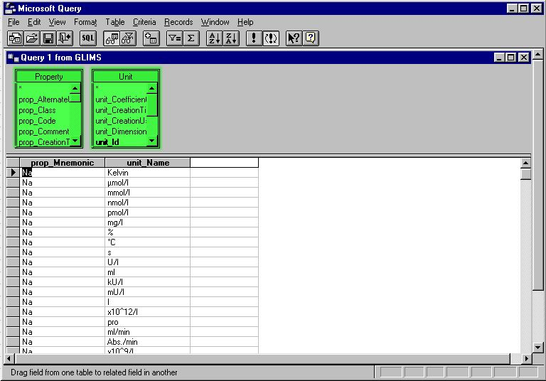
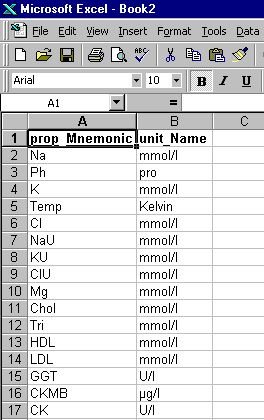

System manual -> ODBC: example in MS Excel
1. Introduction.
Before we begin with this tutorial, it is expected that:
- There is an installed and working ODBC server - client connection (Intersolv 3.10 32-bit Sequelink) on your system.
- You have a working knowledge of Excel or Access.
- You have a basic understanding of SQL.
- The GLIMS documentation is installed on your system. This is essential because with the help of the documentation it will be possible to select the right tables in the GLIMS databases.
The ODBC link makes it possible to interrogate your GLIMS database in an easy and consistent way. This tutorial will explain how to choose the right GLIMS tables and how to deploy the information hidden within.
2. EXCEL configuration.
Remark. If you have already set the file DSN, skip this chapter.
First of all, we are going to make the ODBC link from EXCEL to GLIMS. Here we work with EXCEL, but the same is possible with e.g. ACCESS.
The GLIMS application contains three databases: the genro, genrw and the glims database. So if you want to have access to the data contained in these databases, each of these has to be defined. This configuration must be done only once for each database. The next time you start EXCEL, you will see that the connection has been saved.
In order to know which database you have to access the following rules apply:
- If the table name contains an underscore " _ " then it will be a table in the genro or genrw database, e.g. sc_user, gp_text,...
- If you can change the data of this tables then it is located in the genrw database. If you can't change the data then it is in the genro database.
- All other tables can be found in the glims database.
|
- Open EXCEL. The application starts with a blank worksheet. Select Data in the menu. Select now Get External Data and click on Create New Query
- A new menu will appear: Choose Data Source . Choose New Data Source and click O.K.
- A new menu will appear: Create New Data Source. Fill in the name of the database you want to connect to:
- Now select a driver for the type of database you want to access. Click on Intersolv 3.10 32-bit Sequelink.
- A new menu will appear: SequeLink Data Sources. Select the database you want to connect to. If the ODBC-connection was installed by MIPS then it will be possible to select from the three GLIMS databases: genro, genrw and glims. For our example we will select the glims database.
- A new menu will appear: Logon to SequeLink Service. Fill in your user name and your password of the machine where the database is located. You will also have to specify the path and name of the database you want to connect to. Click O.K.
- Now click OK.
- The ODBC link to the database is ready. Click Cancel and exit Excel. Or you can choose the GLIMS database and go to chapter 4 from this tutorial.
3. Choosing the right tables
Before we start using the ODBC connection we must focus on what we are going to seek in the GLIMS databases. It is important to understand that each table in GLIMS corresponds with an actual table in the logical structure of the database.
Suppose we want to have a list with all the properties and their corresponding units.
- Open the GLIMS documentation and select the table properties
- Search the field Unit . You will see a hyperlink to the table Unit. The hyperlink is the blue underscored text. Clicking it, brings you to the documentation of the Unit table. So, now we know that the values of the units will be in the unit table.
So, if we want to have a list with all the properties and their corresponding units we need to interrogate two tables:
- the Property table
- the Unit table
4. Working with the databases in Excel.
- Open EXCEL. The application starts with a blanck worksheet. Select Data in the menu. Select now Get External Data and click on Create New Query
- A new menu will appear: Choose Data Source . Choose the GLIMS database and click O.K.
- The Query Wizard is started and will guide you through the selection of the right tables.
- Select the property table and click on the little + sign in front of the table name. The table will expand and all columns from the table are visible. Remember that we wanted to make a list with all the properties and their corresponding units. From the GLIMS documentation on the table property we learned that the mnemonic is an easy-to-remember identifier string and that it is mandatory. This means that the column will never be empty. So we select the column prop_Mnemonic. Click on the highlighted arrow. This action will put the column prop_Mnemonic in your query.

- Now go to the Unit table and expand the contents. Here we will select the Unit_Name column. Click on Next.
- Now we get a message form the Query wizard. It knows the tables but it does not know how to connect them. We have to do this manual. Click on O.K.
- Microsoft Query gives us a visual representation of the two tables we chose. It is up to us to make a link between the tables. Before we do this we make the tables bigger. Go with the mouse to the header of the Unit table. Click with the left mouse in the header and drag the table to the right. Go with the mouse to the border of the highlighted tables. The cursor will change in a double arrow. Then you can push the left mouse button and drag the border to a desired size.
 - The link between the Property table and Unit table is unit. Go to the table Property. Select prop_Unit . Click with the left mouse and drag it to the Unit table. Let the mouse button go once you are over the column unit_Id . A link is made.

- Our link is made. Now we will return the data form Microsoft Query to our Excel worksheet. Push the highlighted button.
- The next window appears. Here you can choose where the data must be sent to. Click OK.
- And here is the result of our hard work:

5. More complex example.
The graphical interface of Microsoft Query is limited. It is e.g. not possible to work with outer joins and more than two tables. The solution is to write you own SQL query.
Suppose we want a table with all the properties with their units and alternate units. In Excel we start a new query. Select the two tables and let start Microsoft Query automatically. Click on the SQL button. Then in the SQL window that appears you can write your own SQL query.